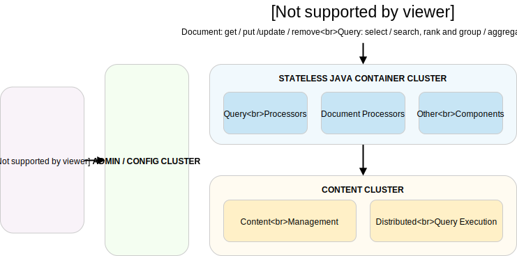
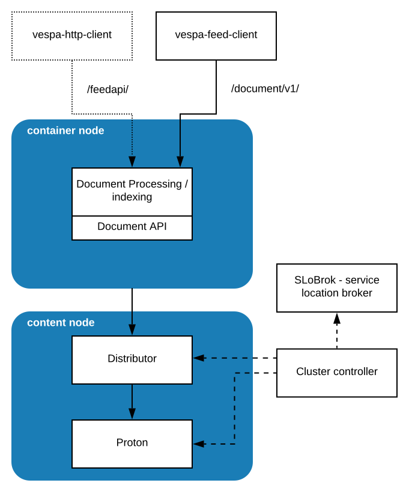
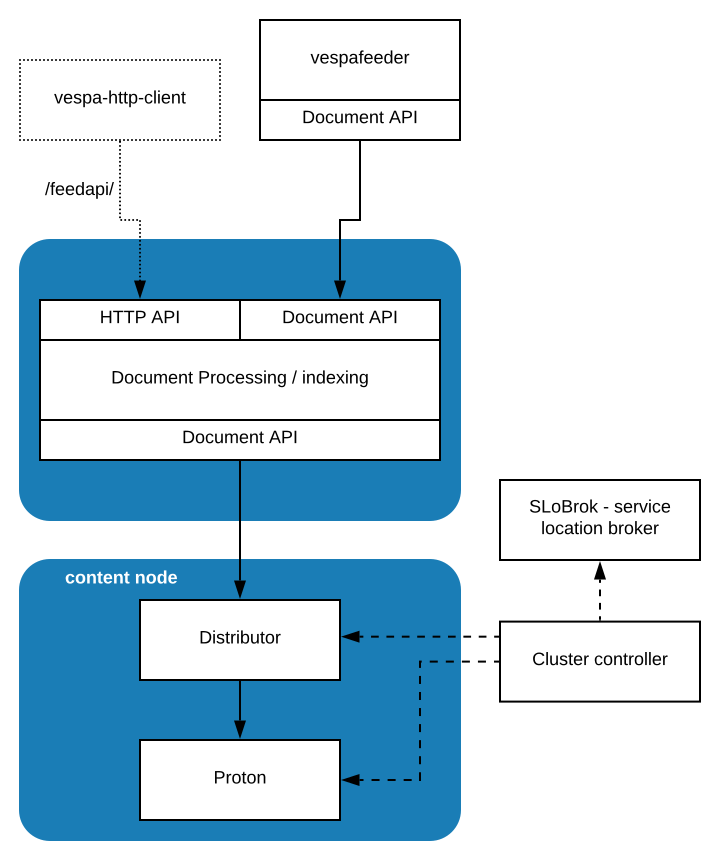

This guide covers the aspects of accessing documents in Vespa. Documents are stored in content clusters. Writes (PUT, UPDATE, DELETE) and reads (GET) pass through a container cluster. Find a more detailed flow at the end of this article.
Vespa's indexing structures are built for high-rate, memory-only operations for field updates. Refer to the feed sizing guide for write performance.
Vespa supports parent/child for de-normalized data. This can be used to simplify the code to update application data, as one write will update all children documents.
Applications can add custom feed document processors and multiple container clusters - see indexing for details.
| Get | Get a document by ID. |
||||||||
|---|---|---|---|---|---|---|---|---|---|
| Put | Write a document by ID - a document is overwritten if a document with the same document ID exists. |
||||||||
| Remove | Remove a document by ID. If the document to be removed is not found, it is not considered a failure - the call returns a reply stating that no document was found. Read more about data-retention. |
||||||||
| Update | Also referred to as partial update, as it updates some/all fields of a document by ID. If the document to update does not exist, the update returns a reply stating that no document was found. Update supports create if nonexistent. All data structures (attribute, index and summary) are updatable. Note that only assign and remove are idempotent - message re-sending can apply updates more than once. Use conditional writes for stronger consistency.
|
A test and set condition can be added to Put, Remove and Update operations. The condition is a document selection. Refer to the test-and-set reference.
Example: Increment the sales field only if it is already equal to 999:
{
"update": "id:music:music::BestOf",
"condition": "music.sales==999",
"fields": {
"sales": {
"increment": 1
}
}
}
Note: Use documenttype.fieldname (e.g. music.sales) in the condition,
not only fieldname.
Note: If the condition is not met, an error is returned. ToDo: There is a discussion whether to change to not return error, and instead return a condition-not-met in the response.
Updates to nonexistent documents are supported using create. An empty document is created on the content nodes, before the update is applied. This simplifies client code in the case of multiple writers. Example using the Java Document API:
public DocumentUpdate createUpdate(DocumentType musicType) {
DocumentUpdate update = new DocumentUpdate(musicType, "id:mynamespace:music::http://music.yahoo.com/bobdylan/BestOf");
update.setCreateIfNonExistent(true);
return update;
}
create can be used in combination with a
condition.
If the document does not exist, the condition will be ignored
and a new document with the update applied is automatically created.
Otherwise, the condition must match for the update to take place.
Caution: if all existing replicas of a document are missing when an update with "create": true is executed, a new document will always be created. This happens even if a condition has been given. If the existing replicas become available later, their version of the document will be overwritten by the newest update since it has a higher timestamp.
If a key is missing in a weighted set field, it can be auto created before incrementing its key value:
field tag type weightedsetThe above also auto-deletes the key if decremented to 0.{ indexing: attribute | summary weightedset { create-if-nonexistent remove-if-zero } }
Documents are created using JSON or in Java:
| /document/v1/ | API for get, put, remove, update, visit. |
| vespa-feed-client |
|
| Vespa HTTP client | Note: This will be replaced by the vespa-feed-client. Jar writing to Vespa either by method calls in Java or from the command line. It provides a simple API with high performance using multiplexing and multiple parallel async connections. It is recommended in all cases when feeding from a node outside the Vespa cluster. |
| Java Document API | Provides direct read-and write access to Vespa documents using Vespa's internal communication layer. Use this when accessing documents from Java components in Vespa such as searchers and document processors. |
| vespa-feeder | Utility to feed data with high performance. vespa-get gets single documents, vespa-visit gets multiple. |
A content cluster blocks external write operations when at least one content node has reached the resource limit of disk or memory. This is done to avoid saturating content nodes. The Cluster controller monitors the resource usage of the content nodes and decides whether to block feeding. When feed is blocked, write operations are rejected by Distributors. All Put operations and most Update operations are rejected. These operations are still allowed:
assign operations to numeric single-value fieldsTo remedy, add nodes to the content cluster, or use nodes with higher capacity. The data will auto-redistribute, and feeding is unblocked when all content nodes are below the limits. Configure resource-limits to tune this.
These metrics are used to monitor resource usage and whether feeding is blocked:
| cluster-controller.resource_usage.nodes_above_limit | The number of content nodes that are above one or more resource limits. When above 0, feeding is blocked. |
|---|---|
| content.proton.resource_usage.disk | A number between 0 and 1, indicating how much disk (of total available) is used on the content node. |
| content.proton.resource_usage.memory | A number between 0 and 1, indicating how much memory (of total available) is used on the content node. |
ReturnCode(NO_SPACE, External feed is blocked due to resource exhaustion:
memory on node 0 [my-vespa-node-0.example.com] (0.82 > 0.80))
The address space used in Attribute Multivalue Mapping or Attribute Enum Store can also go full and block feeding - see attribute data structures. This will very rarely happen.
| Attribute Multivalue Mapping |
|
||||||
|---|---|---|---|---|---|---|---|
| Attribute Enum Store |
|
An error is returned when an attribute limit is exceeded:
ReturnCode(NO_SPACE, External feed is blocked due to resource exhaustion:
attribute-enum-store:test.ready.a1 on node 0 [my-vespa-node-0.example.com] (0.91 > 0.90))
To fix a problem with too many values,
add content nodes to distribute documents with attributes over more nodes -
i.e. reduce number of documents per node.
Read the reference at Vespa consistency model. Vespa is eventually consistent - find details on dynamic behavior in elastic Vespa.
It is recommended to use the same client instance for updating a given document - both for data consistency but also performance (see concurrent mutations). Read more on write operation ordering. For performance, group field updates to the same document into one update operation.
Applications can auto-expire documents. This feature also blocks PUTs to documents that are already expired - see indexing and document selection. This is a common problem when feeding test data with timestamps, and the writes a silently dropped.
Options for batch deleting documents:
while True; do query and read document ids, if empty exit delete document ids using /document/v1 wait a sec # optional, add wait to reduce load while deleting
$ vespa-feed-client --file deletes.json --endpoint my-endpoint
<documents garbage-collection="true">
<document type="mytype" selection="mytype.version > 4" >
</documents>
$ curl -X DELETE --cert data-plane-public-cert.pem --key data-plane-private-key.pem \ "$ENDPOINT/document/v1/my_namespace/my_doctype/docid?selection=my_doctype&cluster=my_cluster"
Use the vespa-feed-client or /document/v1/ API directly to read and write documents. (Note that the vespa-http-client will be discontinued, use the vespa-feed-client as a drop-in replacement). Alternatively, use vespa-feeder to feed files or the Java Document API.
Next is indexing and/or document processing where documents are prepared for indexing (and optionally processed using custom code), before being sent to the content node. The distributor maps the document to bucket, and sends it to proton nodes:
 | Document processing | The document processing chain is a chain of processors that manipulate documents before they are stored. Document processors can be user defined. When using indexed search, the final step in the chain prepares documents for indexing. The Document API forwards requests to distributors. It calculates the correct content node using the distribution algorithm and the cluster state. With no known cluster state, the client library will send requests to a random node, which replies with the updated cluster state if the node was incorrect. Cluster states are versioned, such that clients hitting outdated distributors do not override updated states with old states. |
|---|---|
| Distributor |
The distributor keeps track of which content nodes that stores replicas of each bucket (maximum one replica each), based on redundancy and information from the cluster controller. A bucket maps to one distributor only. A distributor keeps a bucket database with bucket metadata. The metadata holds which content nodes store replicas of the buckets, the checksum of the bucket content and the number of documents and meta entries within the bucket. Each document is algorithmically mapped to a bucket and forwarded to the correct content nodes. The distributors detect whether there are enough bucket replicas on the content nodes and add/remove as needed. Write operations wait for replies from every replica and fail if less than redundancy are persisted within timeout. |
| Cluster controller | The cluster controller manages the state of the distributor and content nodes. This cluster state is used by the document processing chains to know which distributor to send documents to, as well as by the distributor to know which content nodes should have which bucket. |
| Proton | Proton node has a bucket management system, which sends requests to a set of document databases, which each consists of three sub-databases. In short, this node activates and deactivates buckets for queries. |
| Routing |
Vespa lets application set up custom document processing / indexing, with different feed endpoints. Refer to indexing for how to configure this in services.xml. #13193 has a summary of problems and solutions. |
|---|---|
| Tracing |
Use tracelevel
to dump the routes and hops for a write operation - example:
$ curl -H Content-Type:application/json --data-binary @docs.json \
$ENDPOINT/document/v1/mynamespace/doc/docid/1?tracelevel=4 | jq .
{
"pathId": "/document/v1/mynamespace/doc/docid/1",
"id": "id:mynamespace:doc::1",
"trace": [
{ "message": "[1623413878.905] Sending message (version 7.418.23) from client to ..." },
{ "message": "[1623413878.906] Message (type 100004) received at 'default/container.0' ..." },
{ "message": "[1623413878.907] Sending message (version 7.418.23) from 'default/container.0' ..." },
{ "message": "[1623413878.907] Message (type 100004) received at 'default/container.0' ..." },
{ "message": "[1623413878.909] Selecting route" },
{ "message": "[1623413878.909] No cluster state cached. Sending to random distributor." }
|